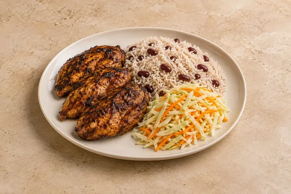

Jerk chicken, coconut rice & peas, lime slaw
Includes the 20-minute chicken marinating time. Sides included in the recipe.
Rice & Bowls
Thick, clingy Thai-style curry sauce with rice and toppings.
Estimated total: About 40 min total
Ingredient quantities update automatically

The sauce should stick to the meat and not run like a normal curry.
Cool rice as quickly as possible, ideally within 1 hour, and refrigerate in shallow portions. Eat the rice, and any leftovers mixed with it, within 24 hours. Keep other cooked components separate and use within 48 hours. Keep the thick curry and rice separate; add crunchy toppings at serving.
Freeze suitable cooled components separately for up to 2 months for best quality. If freezing freshly cooked rice, cool it quickly and freeze within 1 hour. Defrost in the fridge and use within 24 hours. The coconut sauce may separate slightly; stir it back together as it heats.
Reheat rice only once until steaming hot throughout and eat immediately. Heat other cooked components thoroughly, keeping cold toppings separate. Warm the curry gently in a saucepan, stirring to recombine the coconut milk.
Use firm tofu instead of chicken breast, and soy sauce instead of fish sauce if preferred. Curry pastes vary in strength and may contain shrimp; check the label and add gradually.
Rice needs faster cooling: cool quickly, ideally within 1 hour, and refrigerate; use within 24 hours. If freezing freshly cooked rice, cool it quickly and freeze within 1 hour. Defrost in the fridge and use within 24 hours. Reheat only once until steaming hot throughout and eat immediately. Do not heat rice again if it was already reheated, including a heated microwave pouch. Keep the fridge at 0–5°C and the freezer around −18°C.
Food-safety guidance: Food Standards Agency: chilling and freezing · reheating leftovers · cooked rice.